Jornada Profissional
Experiência Inicial
Com uma carreira de 5 anos como Personal Trainer e Instrutor de Musculação, aprimorei significativamente minhas habilidades profissionais e adquiri uma sólida base de experiência. Durante esse tempo, concentrei-me em aperfeiçoar minhas habilidades de comunicação e de resolução de problemas. Minha trajetória como Personal Trainer permitiu-me desenvolver uma abordagem altamente personalizada para atender às metas e necessidades individuais dos meus clientes.
Argentina
Além disso, morei em Rosario, Argentina, por mais de 2 anos, onde aprimorei minha proficiência na língua espanhola. Durante essa estadia, comecei meus estudos em medicina, que me proporcionou uma base sólida em adaptabilidade e resiliência, habilidades valiosas. Entretanto, tomei a decisão de interromper meu curso nessa etapa, uma vez que percebi que essa não era a trajetória que eu realmente desejava para meu futuro.
Ingresso na Área de Tecnologia
Essas experiências me ensinaram a aprender com desafios e a abraçar mudanças com mente aberta. Agora, estou ansioso para aplicar todo esse aprendizado na área de tecnologia. 
Expectativas para o Futuro
Estou confiante de que minha jornada até aqui me equipou com as habilidades necessárias para enfrentar novos desafios e contribuir de forma significativa para esse campo em constante expansão. Continuo comprometido com o aprendizado contínuo e a evolução constante, buscando sempre novas oportunidades para crescer e aprimorar minhas competências. Minhas expectativas para o futuro incluem explorar novas tecnologias, expandir meu conhecimento e aplicar minhas habilidades em projetos inovadores, sempre com o objetivo de gerar impacto positivo e alcançar a excelência.